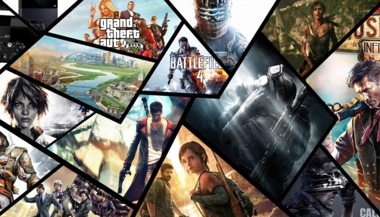

1 / 5
Мотоцикли
Моє хобі, як власника мотоцикла, є активні поїздки на ньому. Трохи небезпечно, але ті емоції, які ти отримаєш під час поїздки не зрівняти ні з чим.
2 / 5
Волейбол
Я обожнюю цей вид спорту. Впершу чергу через те що він дуже активний. Можна зібратися із друзями і не тільки та зіграти пару партій на перерві чи уроці фізри
4 / 5

Відеоігри
Як і більшість хлопців, я обожнюю пограти не тільки в реальні, але і у віртуальні ігри. Мені подобається як одному та с друзязи зануритись у світ віртуальних подій, та відчувати себе ким завгодно і коли завгодно. Це круто, але дуже багато в цьому часу приділити не варто.